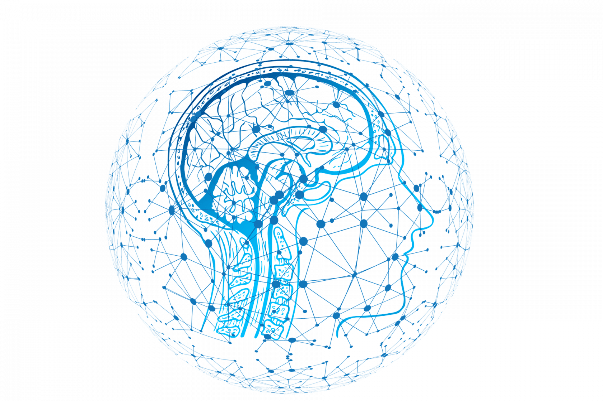

<ion-app [class.dark-theme]="dark">
    <ion-split-pane contentId="main-content">

        <ion-menu contentId="main-content">
            <ion-header color="primary">
                <ion-toolbar color="primary">
                    <ion-title text-center>Memory for Algebra</ion-title>
                </ion-toolbar>
            </ion-header>
            <ion-content>
                <ion-list lines="none">
                    <div text-center>
                        
                    </div>

                    <ion-list>
                        <ion-menu-toggle auto-hide="false" *ngFor="let p of appPages">
                            <ion-item [routerDirection]="'root'" [routerLink]="[p.url]">
                                <ion-icon slot="start" [name]="p.icon" color="primary"></ion-icon>
                                <ion-label>
                                    {{p.title}}
                                </ion-label>
                            </ion-item>
                            <hr>
                        </ion-menu-toggle>
                    </ion-list>
                </ion-list>

                <!-- <ion-list *ngIf="!loggedIn" lines="none">
                    <ion-list-header>
                        Settings
                    </ion-list-header>

                    <ion-item>
                        <ion-icon slot="start" name="moon-outline" color="primary"></ion-icon>
                        <ion-label>
                            Dark Mode
                        </ion-label>
                        <ion-toggle [(ngModel)]="dark"></ion-toggle>
                    </ion-item>
                </ion-list> -->
            </ion-content>
        </ion-menu>

        <ion-router-outlet id="main-content"></ion-router-outlet>

    </ion-split-pane>

</ion-app>